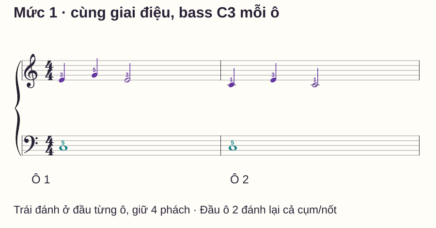
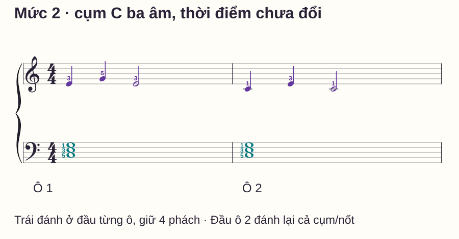
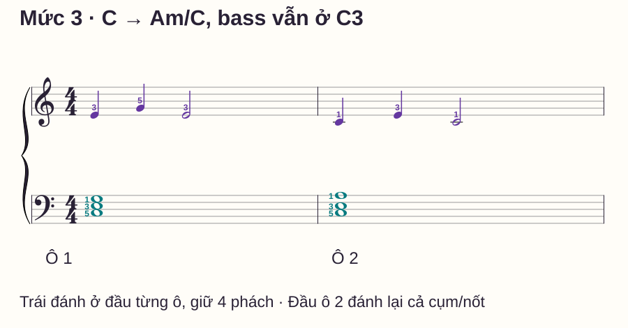
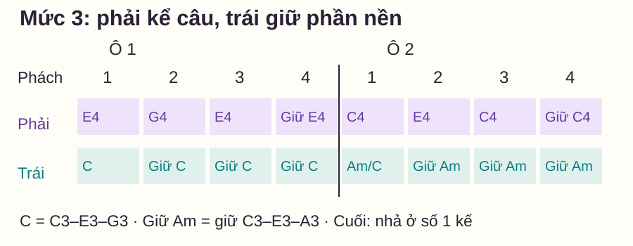

Phối hợp hai tay
Ghép giai điệu và hợp âm tay trái: ba mức đệm piano
# Ghép giai điệu và hợp âm tay trái: ba mức đệm piano
Bạn chơi được câu giai điệu nhưng cứ thêm hợp âm bên trái là tay phải dừng hoặc nhả theo. Nếu đồng thời đổi cả giai điệu, tiết tấu đệm và thế tay, bạn khó biết nhiệm vụ nào vừa làm câu nhạc đứt quãng.
Bài này giữ nguyên một giai điệu hai ô qua ba phiên bản: bass đơn, hợp âm cố định, rồi một lần đổi hợp âm. Mỗi mức chỉ thêm một nhiệm vụ chính. Bạn có thể dừng ở mức đang kiểm soát được; phần đệm dày hơn không tự có nghĩa là phù hợp hơn với mọi bài.
Trả lời nhanh
Để ghép giai điệu với hợp âm trái, trước hết xác định điểm đánh, thời gian giữ và điểm đổi của cả hai phần. Dùng một giai điệu ngắn đã đọc rõ, thêm bass đơn giữ cả ô rồi mới tăng thành cụm hợp âm. Khi mức đó ổn, thêm một lần đổi hợp âm trong khi giữ nguyên giai điệu và tempo thử. Trong bài này, tay phải chơi cùng hai ô ở cả ba mức; trái lần lượt dùng C3, cụm C3–E3–G3, rồi chuyển sang C3–E3–A3. Đánh cụm mới đúng đầu ô, giữ qua các tiếng phải, và kiểm lại trên mẫu đầy đủ sau mỗi lượt sửa riêng.
Giai điệu và phần đệm làm hai việc gì?
Giai điệu là đường nốt bạn đang theo dõi như câu hát; phần đệm cung cấp nền âm và nhịp theo cách sắp xếp của bản nhạc. Không phải mọi bản đều giao giai điệu cho tay phải hoặc hợp âm cho tay trái. Trong mẫu này, ta chủ động chọn cách chia đó để giảm nhiệm vụ.
OpenLearn — Following piano scores nhấn mạnh việc theo dõi giai điệu đồng thời nhận biết phần đệm trên bản piano. Cách chia ba mức dưới đây là protocol riêng của website, không phải một lộ trình bắt buộc được nguồn quy định.
Chuẩn bị phím, ngón và hai ô giai điệu
C = Đô, E Mi, G Sol, A La. C4 là Đô giữa, C3 thấp hơn C4 một quãng tám. Ngón 1 cái, 2 trỏ, 3 giữa, 4 áp út, 5 út. Tay phải ở vùng C4–G4; tay trái sẽ dùng C3, E3, G3 và A3 ở những mức khác nhau.
| Ô | Tay phải | Ngón | Thời điểm đánh |
|---|---|---|---|
| 1 | E4 đen, G4 đen, E4 trắng | 3–5–3 | Phách 1, 2, 3; giữ E4 qua 4 |
| 2 | C4 đen, E4 đen, C4 trắng | 1–3–1 | Phách 1, 2, 3; giữ C4 qua 4 |
Trong 4/4, mỗi ô đếm 1–2–3–4. Nốt đen dài một phách, trắng hai phách, tròn bốn phách. Tập riêng giai điệu một lượt để biết đúng nốt và nhả: nốt cuối câu giữ qua phách 4 rồi nhả khi tới số 1 của ô tiếp.
Thử khoảng 50 phách/phút, một click mỗi phách, hoặc chọn thấp hơn nếu chưa kịp chuẩn bị. Không pedal ở lượt kiểm. Đếm một ô trước khi vào; nếu vẫn phải đoán phím, tách phần tìm vị trí khỏi lượt giữ nhịp.
Mức 1: chỉ thêm bass C3

Đặt ngón 5 trái lên C3. Ở phách 1 ô 1, đánh E4 phải cùng C3 trái; tại 2 phải sang G4 trong khi trái vẫn giữ. Tại 3 phải trở lại E4, trái tiếp tục giữ; tại 4 cả hai giữ nốt đang có.
Tới phách 1 ô 2, phải đổi C4 và trái đánh lại C3. Dù bass vẫn là cùng một phím, đây là điểm bắt đầu mới trong mẫu. Giữ đúng thời gian rồi nhả cả hai ở số 1 sau ô 2 nếu kết thúc lượt.
Thử một cặp phách 1–2 trước, rồi cả hai ô hai lượt có đặt lại. Nếu trái nhả theo phải ở phách 2, quay lại cặp ấy: phải đổi một tiếng, trái giữ nguyên. Mức 1 chưa yêu cầu ba âm bên trái cùng bắt đầu.
Mức 2: thêm hai âm để thành hợp âm C

C trưởng gồm C–E–G. Dùng C3–E3–G3, ngón trái từ thấp lên 5–3–1. Chơi từng nốt để kiểm phím, rồi bấm thành cụm; nghe xem có một âm đến muộn hay vô tình thành chuỗi rải.
Nếu tầm tay này chưa thoải mái, tập nhận từng nốt hoặc giảm còn C3–E3 trước. Không ghì cổ tay để giữ ba phím. Một phiên bản giảm hai nốt là bước tập riêng có chủ ý; khi gọi là mẫu đầy đủ mức 2, bạn cần quay lại đủ C3–E3–G3.
Giữ tempo thử của mức 1 nếu kiểm soát được. Ở đầu mỗi ô, trái đánh cả cụm cùng tiếng phải đầu tiên; qua 2/3/4 giữ cụm, không gõ lại theo từng nốt giai điệu. Khi sang ô 2 phải đánh lại ba âm trái, kể cả khi tên hợp âm chưa đổi.
Thử mỗi ô riêng rồi hai ô liên tục, tối đa hai lượt sau khi sửa một lỗi cụ thể. Nếu giai điệu thay đổi chỉ vì thêm ba nốt trái, giảm đoạn thay vì tăng số lần chạy cả câu.
Mức 3: đổi một nốt để chuyển sang Am/C

Am là La thứ, gồm A–C–E. Bài dùng cách xếp C3–E3–A3 ở ô 2, ngón trái 5–3–1 nếu phù hợp bàn tay. So với cụm C3–E3–G3, ngón 1 chuyển G3 lên A3; C3 và E3 là hai cao độ chung. Ở điểm đổi vẫn đánh lại cả cụm, vì sheet không có dấu nối.
Tìm riêng thế C3–E3–A3 trước. Tầm từ C3 tới A3 rộng hơn mức 2; nhả và đặt lại nếu chưa thoải mái, không giữ một thế căng để cố chuyển nhanh. Bạn có thể ở lại mức 2 để luyện phối hợp trong khi học riêng cụm mới.
Khi hai thế rõ, lấy ô 1 phách 3–4 → ô 2 phách 1–2. Dựng lại cụm C bên trái trước khi vào E4 phải ở phách 3: đó là trạng thái cụm đã bắt đầu từ phách 1. Tới số 1 ô 2, cùng đánh C4 phải và cụm Am/C trái; tới 2, chỉ phải đổi E4 còn trái giữ. Sau lượt tìm động tác, chơi lại từ đầu để kiểm đúng các điểm bắt đầu thật.
Lưới mức 3: nghe tiếng mới, nhìn phím đang giữ

| Mức | Thêm nhiệm vụ gì? | Điều giữ nguyên để so sánh |
|---|---|---|
| 1 → 2 | Một bass thành cụm ba âm cùng lúc | Giai điệu, điểm đánh trái ở đầu mỗi ô, tempo thử |
| 2 → 3 | Chuẩn bị và chuyển một cụm mới | Giai điệu, trường độ cả hai bè, số lần đánh trái |
Ba phiên bản là thiết kế để so sánh nhiệm vụ, không phải ba mức đánh giá người chơi. Bass đơn chưa nói hết tính chất hợp âm; cụm trái dày hơn có thể cần điều chỉnh âm lượng và vùng âm trong một bản nhạc khác.
Lỗi thường gặp và cách thử sửa
| Biểu hiện | Phép kiểm | Bài sửa ngắn |
|---|---|---|
| Trái nhả theo nốt phải | Xem phím trái ở phách 2/3 | Một cụm giữ với hai tiếng phải, rồi trở lại cả ô |
| Ba âm trái vào thành chuỗi | Chơi riêng cụm, chưa thêm phải | Đặt sẵn rồi bấm, nghe điểm bắt đầu; không ép lực |
| Sang ô 2 phải bị chậm | Thử riêng đúng điểm C→Am/C | Giảm đoạn còn 3–4–1–2, sau đó nối lại |
| Giữ G3 trong cụm Am/C | Gọi từng phím cụm đích | Tách G3→A3 bằng ngón 1 khi các ngón khác đã nhả, rồi bấm cụm mới |
| Đệm lấn câu giai điệu | Nghe riêng rồi ghép ở mức âm thoải mái | Giảm độ nổi của trái, giữ phải rõ; không dùng lực cố định cho mọi nốt |
Routine mười phút và phép tự kiểm
- 0–2 phút: đọc và chơi giai điệu riêng, xác định điểm giữ qua phách 4.
- 2–4 phút: mức 1, kiểm trái giữ qua các lần phải đổi.
- 4–6 phút: mức 2 hoặc luyện riêng cụm nếu còn vào lệch tiếng.
- 6–8 phút: thử một lần chuyển mức 3 nếu thế mới đã thoải mái.
- 8–10 phút: đặt lại, bắt trực tiếp ô 2 ở mức đang tập rồi ghi một lỗi.
Trước khi mở đáp án, trả lời: mức 3 ô 2 phách 2 trái làm gì? Đầu ô 2 có giữ nối C3/E3 vì chung cao độ không? Tới đâu nhả hai bè khi kết thúc?
Mở đáp án và tiêu chí
Phách 2: trái giữ đủ C3–E3–A3. Đầu ô 2: cả ba nốt được đánh lại, kể cả C3/E3, vì không có dấu nối. Cuối câu: phải giữ C4 và trái giữ cụm tới số 1 tưởng tượng của ô 3 rồi nhả. Tiêu chí: giai điệu giữ nguyên, trái đúng nốt/điểm vào/độ dài và không thêm khoảng chờ ở vạch ô.
Bạn có thể mở rộng khi làm được mẫu đầy đủ của mức đang tập, bắt được trực tiếp ô 2 và lặp lại sau một khoảng đặt lại ở tempo phù hợp. Không cần đạt đủ ba mức trong một buổi.
Đọc thêm
Đảo hợp âm giải thích vì sao bass C vẫn có thể thuộc Am/C. Vòng I–IV–V có một bộ thế khác để luyện chuyển. Nếu khó nằm ở việc giữ khi tay kia đổi, dùng một tay giữ, một tay di chuyển trước khi tăng số âm.
Câu hỏi thường gặp
Có phải giai điệu luôn nằm ở tay phải không?
Không. Bài chọn như vậy để có một mẫu rõ. Khi đọc bản khác, xác định bè giai điệu theo chính âm nhạc và ký âm của bản đó.
Thêm hợp âm có bắt buộc chơi to hơn bass đơn không?
Không. Cụm nhiều âm đã làm màu âm thay đổi. Hãy nghe sự cân bằng giữa hai phần, không dùng số nốt để quyết định lực đánh.
Tôi có được tập hai nốt thay ba nốt không?
Có thể dùng như phiên bản giảm nhiệm vụ. Ghi rõ đang giảm âm nào, rồi quay về mẫu đầy đủ nếu mục tiêu là thực hiện đúng mức 2/3.
C3–E3–A3 có phải hợp âm C thêm A không?
Trong mẫu ba âm này, các thành phần khớp A–C–E của Am và bass là C, nên bài gọi Am/C. Ngữ cảnh khác có thể dùng cách phân tích khác; đây là lựa chọn hòa âm đã ghi rõ cho mẫu.
Có nên bật pedal để trái ngân dễ hơn không?
Lượt kiểm này không pedal để tách rõ giữ/nhả của ngón. Thêm pedal cần đọc nhiệm vụ đổi pedal riêng, không dùng để che chỗ chưa chuẩn bị được cụm kế.
Có dùng nguyên phần đệm này cho bài hát khác không?
Chỉ khi hòa âm, giai điệu, vùng âm và tiết tấu phù hợp. Đây là câu tự biên soạn để luyện phối hợp, không phải mẫu đệm mặc định cho mọi ca khúc.
Nguồn và ghi chú biên soạn
- OpenLearn — Following piano scores: theo dõi giai điệu và phần đệm.
- OpenLearn — Harmony: the triad: đối chiếu thành phần hợp âm ba. Nguồn được kiểm ngày 27/10/2026.
- Giai điệu, ba phiên bản, hình, routine và tiêu chí do website tự biên soạn; chưa có thử nghiệm học viên hoặc review giáo viên độc lập.